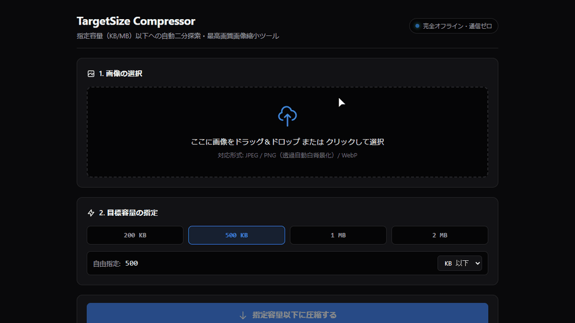

指定キロバイト画像縮小ツール
TargetSize Compressor

ツールを利用する
画像をドラッグ＆ドロップまたは選択し、希望の目標容量を指定して「指定容量以下に圧縮する」を押してください。画像は外部サーバーへ送信されず、お使いの端末内だけで安全・高速に処理されます。
1. 画像の選択
ここに画像をドラッグ＆ドロップ または クリックして選択
対応形式: JPEG / PNG（透過自動白背景化）/ WebP
2. 目標容量の指定
用途
公的申請や資格試験、履歴書のWeb提出などで求められる「○○KB以下」「○MB以下」といった容量制限に合わせて、ブラウザ内で画像を自動圧縮・縮小するツールです。目標容量を指定するだけで、画質と解像度の最適値を自動探索し、目標サイズを超えない最高画質の画像を即座に生成します。画像は外部サーバーに送信されず、お使いのブラウザ内だけで安全に処理されます。
なぜ作ったか
役所の手続きや採用エントリー等で「500KB以下」などの厳しい容量制限を課される場面が多い一方、画質を保ちながら指定容量ぴったりに収めるには画質スライダーの手動調整を何度も繰り返す必要がありました。また、証明写真や公的書類といった機密性の高い画像を外部の圧縮サーバーへアップロードすることへのプライバシー上の懸念もありました。そこで、画像を外部へ一切送信せず、ブラウザ内だけで指定容量以下の最大画質を自動算出するツールとして開発しました。
主な機能・特徴
- 目標容量狙い撃ちの二分探索エンジン: 「200KB」「500KB」「1MB」「2MB」のプリセットや自由入力に対し、最大8回の二分探索によって目標容量を下回る最高品質を自動算出します（実証例：6960×4640px / 約4.0MBの写真を解像度維持のまま423.7KB・品質4%へ89.5%削減）。
- 完全ローカル処理（外部通信ゼロ）: 画像の読み込みからCanvas描画、JPEGエンコード、ダウンロードまでの全工程がお使いの端末内（ブラウザ）で完結します。外部サーバーへの画像送信や通信トラッキングは一切行われません。
- 透過画像の自動白背景合成と世代劣化防止: 透過PNGがJPEG化によって黒塗りになるのを防ぐため、自動で白背景（#FFFFFF）を合成します。また、品質調整だけで収まらず段階的リサイズ（0.85倍）を行う場合も、常に元画像から直接再サンプリングして多重圧縮によるボケ（世代劣化）を防ぎます。
- 実容量ラベル付きダウンロード: 保存ファイル名に
[元ファイル名]_[実サイズ]KB.jpg（例：photo_424KB.jpg）のように実容量が自動付与されるため、提出前の容量再確認が容易です。
注意事項・限界
- HEIC形式の非対応: iPhone等で撮影されたHEIC/HEIF形式はブラウザの標準仕様上直接読み込めないため、あらかじめJPEGやPNG等へ変換してからご利用いただく必要があります。
- 高画素写真における処理負荷: 数千万画素を超える超高解像度写真の場合、端末のCPU/メモリスペックによってCanvasの展開やエンコード処理に数秒程度の時間を要する場合があります。
- 透過情報の維持不可: 高効率な容量圧縮を行うため出力はJPEG形式に統一されており、透過PNGの透明部分はすべて白色に置換されます。

リポジトリを見る
開発支援（サポート）
Zero Dev は個人でツールの設計・開発・運営を行っています。ツールが役に立った際のご支援や、活動を応援していただける方は、以下のリンクよりサポートいただけますと幸いです。